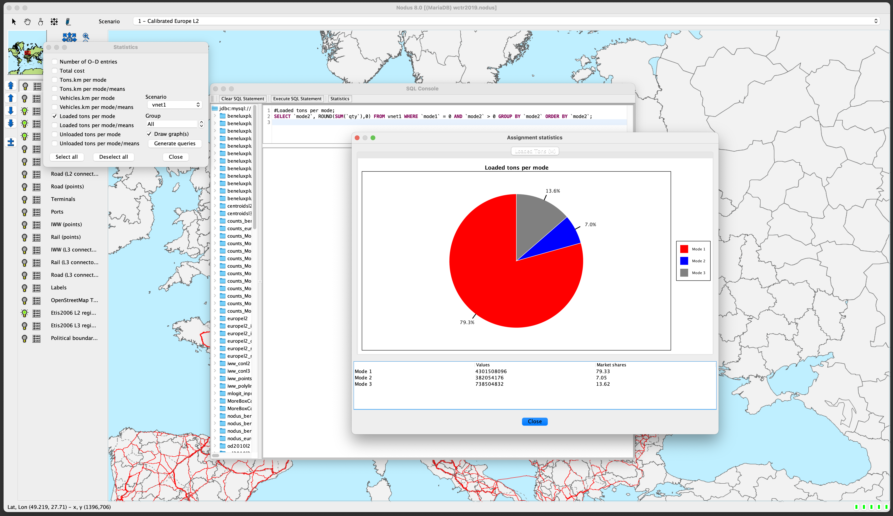
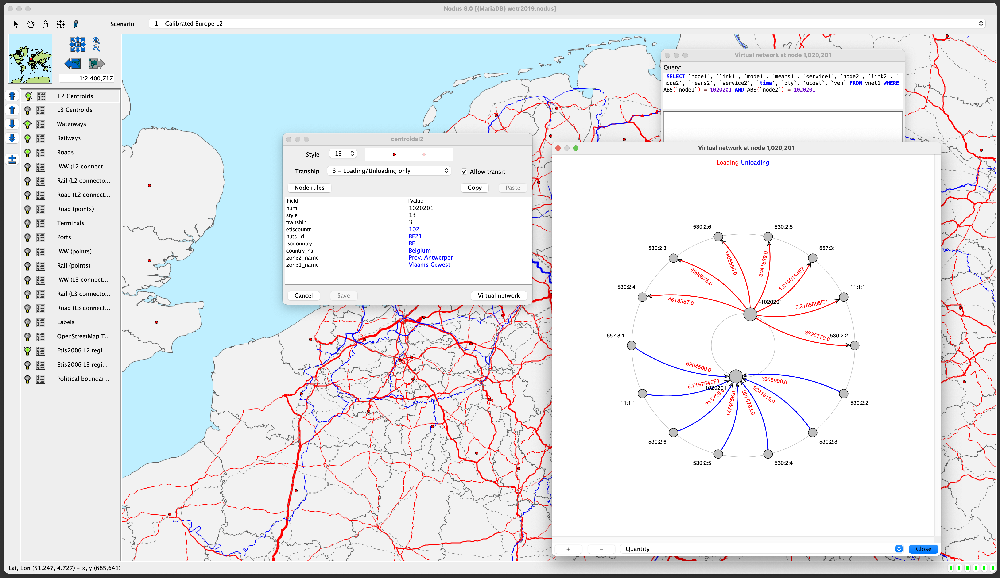

Screenshots
A few screenshots (Linux, Mac OSX and Windows) showing Nodus in
action.
Main frame with a project based on
the ETISPlus networks
For this project, the ETISPlus
database (networks and origin-destination matrices) were used.
Cost functions editor
The background layer is fetched from an
OpenStreetMap server
(tiles).
SQL console
Statistics gathered from database
Some statistics can be automatically generated using SQL
queries and displayed as diagrams.

Comparison between two scenarios
This screenshot shows how two scenarios can be compared.
Faded blue inland waterways represent a reduction of the traffic
while regular blue shows an increase.
Details of the virtual network at
a centroid
The details of the virtual network generated for a real link
or node can be queried and visualized. This screenshot shows the
details for a centroïd after an assignment.

API documentation
The Java source code of Nodus is available and its API fully
documented.
Groovy console for scripts
The API can be called from plugins or scripts. For the
latest, the
Groovy
language, which is close to Java, is used.